WORK IN PROGRESS
(See the github repo here.)
The report is available on the ISC website and in this github repository.
First, load it into R.
library(tidyverse)
library(knitr)
library(pdftools)
library(stringr)
rr_text <- pdf_text("20200721_HC632_CCS001_CCS1019402408-001_ISC_Russia_Report_Web_Accessible.pdf")The pdf_text command returns a character vector with one element per PDF page. The main report text is on pages 8-42.
I’d like to know where the juicy pages are - one way to count how many redactions there are, ***.
redact_n <- str_count(rr_text, pattern = "\\*\\*\\*")Let’s stick these in a tibble, alongside the (pdf, as opposed to printed) page number and original page text.
rr_tib <- tibble(page = 1:length(rr_text),
text = rr_text,
redactions = redact_n)Now a histogram of those redactions:
ggplot(rr_tib, aes(x=redactions)) +
geom_histogram(binwidth = 1, fill = "firebrick", color = "white") +
labs(x = "Number of redactions",
y = "Count",
title = "Histogram of redactions on each page of the Russia Report") +
theme_classic()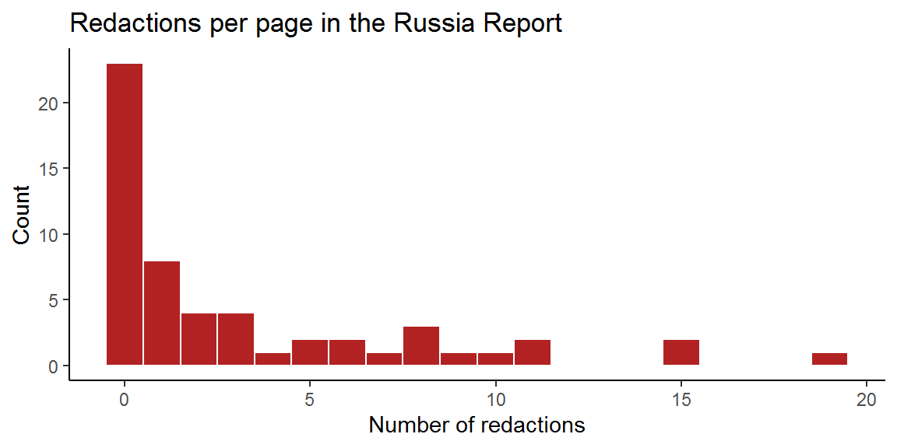
rr_tib %>%
filter(redactions > 10) %>%
select(page, redactions) %>%
arrange(redactions)## # A tibble: 5 x 2
## page redactions
## <int> <int>
## 1 27 11
## 2 45 11
## 3 20 15
## 4 37 15
## 5 38 19The section on PDF pages 37 and 38 (printed page nums 30 and 31) is the winner: “Rising to the challenge”.
Here’s a link to the pdf pages.
gsub(pattern = "\\*\\*\\*",
replace = "\\*\\*\\*[redacted]\\*\\*\\*",
x = rr_tib$text[37:39]) %>%
writeLines()increasing privacy protection – including ubiquitous encryption – presents particular problems for GCHQ, and in the case of Russia it faces a real SIGINT challenge with the use by the Russian government of [redacted]. 98. In terms of human intelligence (HUMINT) operations, technological advancements that gather and analyse data on individuals have generally increased the difficulty [redacted]. The expansion of smart city technology (such as CCTV, smart sensors and mobile device tracking), and the capability that this provides, has increased the ability of [redacted]. 108 [redacted]. (iii) The risk of escalation 99. Covert activity against any state carries the potential for conflict, and action against a nuclear hostile state even more so given the risk of escalation into diplomatic, economic or even military conflict. The Agencies and Defence Intelligence must therefore be particularly discerning [redacted]. 100. In the case of Russia, the potential for escalation is particularly potent: the Russian regime is paranoid about Western intelligence activities and “is not able to treat objectively” international condemnation of its actions. 109 It views any such moves as Western efforts to encourage internal protest and regime change. The risk is compounded by limitations on UK engagement with the Russian government at official and political levels, making deciphering Russian leadership intent even more difficult. Rising to the challenge (i) Focus 101. Due to the difficulty of [redacted], the Intelligence Community have focused their effort on [redacted] main strategic targets, which they assess will provide insight on the most important strategic topics, with intelligence on the lowest priorities collected on an ‘opportunity-only’ basis. These key targets are [redacted]. 102. [redacted]. 110 103. SIS told us that this means operating with “strategic patience” in terms of both recruiting agents and increasing staff. 111 Whilst there are a [redacted] group of staff working on this issue, SIS was clear that a sudden surge in numbers would not yield results more quickly. 112 It is the difficulty of recruiting Russian agents with the right accesses, and the careful planning, tradecraft and operational security around any prospective agents – so as to ensure their safety and minimise any political risk to HMG – which means that it takes a relatively long time for intelligence efforts to produce results. 108 Oral evidence – GCHQ, [redacted] December 2018. 109 Oral evidence – MI5, [redacted] November 2018. 110 Written evidence – 2018 ICE Plan requirements for Russia. 111 Oral evidence – SIS, [redacted] December 2018. 112 Oral evidence – SIS, [redacted] December 2018; we note that SIS [redacted] and has a “series of protections” around the people who do go into the team. 30
appropriate for HMG to capitalise on its strengthened international relationships and push forward with greater emphasis on exposing Russian Hostile State Activity multilaterally; in our view it must be the latter. 32
Let’s try the tidytext package, which is introduced in a great book by Julia Silge and David Robinson.
library(tidytext)Here’s a tidy tibble with all the words:
rr_words <- rr_tib %>%
select(page,text) %>%
unnest_tokens(word, # name of the new column
text) # column with text
rr_words %>%
head(10) %>%
kable()| page | word |
|---|---|
| 1 | intelligence |
| 1 | and |
| 1 | security |
| 1 | committee |
| 1 | of |
| 1 | parliament |
| 1 | russia |
| 1 | hc |
| 1 | 632 |
| 2 | intelligence |
And the top 20 most common words:
rr_words %>%
anti_join(stop_words, by = "word") %>%
count(word) %>%
arrange(desc(n)) %>%
head(20) %>%
kable()| word | n |
|---|---|
| intelligence | 193 |
| russia | 147 |
| russian | 143 |
| uk | 103 |
| security | 93 |
| evidence | 90 |
| committee | 72 |
| defence | 70 |
| threat | 60 |
| 2018 | 59 |
| government | 59 |
| cyber | 58 |
| oral | 54 |
| 2019 | 51 |
| gchq | 49 |
| international | 47 |
| national | 46 |
| foreign | 43 |
| mi5 | 43 |
| agencies | 41 |
Is there a relationship between which intelligence service (MI5, MI6, or GCHQ) is mentioned and whether there is a redaction in that sentence?
Again use tidytext, but this time at the sentence level.
rr_sentences <- rr_tib %>%
unnest_sentences(sentence, text,
to_lower = FALSE) %>%
select(-redactions) # nuke the page-level count of redactions
rr_sentences %>%
slice_sample(n = 5) %>%
kable()| page | sentence |
|---|---|
| 17 | 28 ‘Wedge issues’ are highly divisive subjects which bifurcate a country’s population, often (but not always) into socially liberal and socially conservative camps, and which often to at least some degree transcend traditional political party boundaries. |
| 46 | Russia has also sought to expand its influence in the Middle East. |
| 33 | The Intelligence Coverage and Effects (ICE) process is the method by which SIS and GCHQ are tasked by the Government. |
| 34 | Less talk, more action? |
| 14 | 24. |
That worked reasonably well, though citations at the end of sentences confused it (possible to fix using unnest_regex), footnotes need to be addressed separately (they are sentences beginning with numbers, once the aforementioned sentence problem has been fixed), and it probably doesn’t deal with sentences which cross pages - definitely not when there’s a footnote splitting them too (possible to fix this problem by removing footnotes, gluing all the sentences together, and unnesting again).
Next: code whether sentences mention one of the big three intel agencies.
rr_sentences <- rr_sentences %>%
mutate(
redacted = 0+str_detect(sentence, "\\*\\*\\*"),
mentioned_MI5 = 0+str_detect(sentence, "MI5"),
mentioned_MI6 = 0+str_detect(sentence, "(MI6|SIS)"),
mentioned_GCHQ = 0+str_detect(sentence, "GCHQ"),
mentioned_intel_agency = pmax(mentioned_MI5,
mentioned_MI6,
mentioned_GCHQ),
mentioned_code = paste0(mentioned_MI5,
mentioned_MI6,
mentioned_GCHQ)
)The mentioned_code is a three-bit string: 000 means no agency was mentioned, 100 is MI5 (and no others), 010 is MI6 (and no others), 001 is GCHQ (and no others). All combinations are also captured, e.g., 011 would be MI6 and GCHQ.
This next bit could be automated…
service_mentions <- tibble(
mentioned_code = c("000", "111", "001", "010",
"100", "011", "101", "110"),
mentioned_services = c("None mentioned",
"All",
"GCHQ",
"MI6/SIS",
"MI5",
"MI6 & GCHQ",
"MI5 & GCHQ",
"MI5 & MI6")
)
rr_sentences <- left_join(rr_sentences, service_mentions) %>%
select(-mentioned_code)## Joining, by = "mentioned_code"Let’s count them:
rr_sentences %>%
count(mentioned_services) %>%
arrange(desc(n)) %>%
kable(col.names = c("Service(s) mentioned", "n"))| Service(s) mentioned | n |
|---|---|
| None mentioned | 802 |
| GCHQ | 33 |
| MI5 | 30 |
| MI6/SIS | 15 |
| MI6 & GCHQ | 11 |
| All | 8 |
| MI5 & MI6 | 2 |
| MI5 & GCHQ | 1 |
Does mentioning an intel agency (any of them) in a sentence make it more likely that the sentence will have a redaction?
any_redact_tab <- rr_sentences %>%
group_by(mentioned_intel_agency) %>%
summarise(perc_redacted = 100*mean(redacted)) %>%
mutate(mentioned_intel_agency = c("No intel service",
"One or more"))
any_redact_tab %>%
kable(col.names = c("Mentioned",
"% of sentences redacted"),
digits = c(0,1))| Mentioned | % of sentences redacted |
|---|---|
| No intel service | 12.2 |
| One or more | 43.0 |
Yes. Sentences mentioning any service are 3.5 times more likely to contain a redaction.
How about the various patterns of mention versus no mention?
rr_sentences %>%
group_by(mentioned_services) %>%
summarise(percentage_redacted = 100*mean(redacted)) %>%
arrange(desc(percentage_redacted)) %>%
kable(col.names = c("Mentioned services",
"% of sentences redacted"),
digits = c(0,1))| Mentioned services | % of sentences redacted |
|---|---|
| MI6/SIS | 66.7 |
| GCHQ | 54.5 |
| MI5 | 36.7 |
| MI6 & GCHQ | 27.3 |
| All | 12.5 |
| None mentioned | 12.2 |
| MI5 & GCHQ | 0.0 |
| MI5 & MI6 | 0.0 |
Note be careful with the numbers - they’re mostly superscript citations!
rr_sentences %>%
filter(mentioned_intel_agency == 1 & redacted == 1) %>%
mutate(nice_sentence = gsub(pattern = "\\*\\*\\*",
replace = "\\*\\*\\*[redacted]\\*\\*\\*",
x = sentence)
) %>%
select(page, mentioned_services, nice_sentence) %>%
kable()| page | mentioned_services | nice_sentence |
|---|---|---|
| 12 | GCHQ | • GCHQ has also advised that Russian GRU 6 actors have orchestrated phishing 7 attempts against Government departments – to take one example, there were attempts against [redacted], 8 the Foreign and Commonwealth Office (FCO) and the Defence Science and Technology Laboratory (DSTL) during the early stages of the investigation into the Salisbury attacks. |
| 12 | GCHQ | 10 GCHQ told the Committee that there is “a quite considerable balance of intelligence now which shows the links between serious and organised crime groups and Russian state activity” and that “we’ve seen more evidence of [redacted] serious and organised crime [redacted] being connected at high levels of Russian state and Russian intelligence”, in what it described as a “symbiotic relationship”. |
| 12 | GCHQ | 8 [redacted] 9 GCHQ, Quarterly Report to the ISC, July–September 2018. |
| 12 | MI6/SIS | 10 Oral evidence – SIS, [redacted] February 2019. |
| 12 | GCHQ | 11 Oral evidence – GCHQ, [redacted] February 2019. |
| 14 | GCHQ | [redacted] – GCHQ acknowledged that [redacted] it would have to broaden its recruitment base, with a shift towards recruiting on aptitude rather than on pre-existing skills. |
| 14 | GCHQ | 17 Oral evidence – GCHQ, [redacted] February 2019. |
| 17 | GCHQ | 31 Nonetheless, GCHQ informed us that “[redacted]”, 32 and the Deputy National Security Adviser noted that “there is a lot of work going on [in relation to electoral mechanics] to map the end-to-end processes … [redacted] and to make sure where we can we are mitigating the risks there”. |
| 17 | GCHQ | 31 Oral evidence – GCHQ, [redacted] December 2018; oral evidence – NSS, [redacted] February 2019. |
| 17 | GCHQ | 32 Oral evidence – GCHQ, [redacted] February 2019. |
| 18 | MI5 | This matter is, in our 38 Section 1(2), Security Service Act 1989; MI5 has informed us that it currently has a role to (i) “investigate leads to any of this sort of clandestine activity by foreign states”; (ii) “translate [the] intelligence picture into protective advice to defend our systems”; and (iii) “provide assessed intelligence reporting into the policy system to assist in policy formulation” (oral evidence – MI5, [redacted] December 2018). |
| 20 | GCHQ | 45 Oral evidence – GCHQ, [redacted] December 2018 [redacted]. |
| 24 | MI5 | We welcomed this process, but questioned whether the Intelligence Community has a clear picture of how many Russians there are in the UK who are at risk – for example, would MI5 or any other relevant agency [redacted]? |
| 27 | MI6/SIS | Areas of intelligence coverage work that SIS undertakes in relation to Russia include cultivating agents who are in a position to pass on secret information, particularly in relation to the capabilities and intent of the Russian government, and its intelligence effects work includes [redacted]. |
| 27 | MI6/SIS | In 2001, SIS’s operational effort against Russia was [redacted]%. |
| 27 | MI5 | 76 Written evidence – MI5, 12 March 2019; MI5’s overall resource has increased significantly over this period. [redacted] allocation of effort on Hostile State Activity has [redacted], spending on Hostile State Activity has [redacted]. |
| 28 | GCHQ | 81 Approximately [redacted]% of GCHQ’s current operational effort is on Russia. |
| 28 | GCHQ | This is understandable: the 80 Oral evidence – GCHQ, [redacted] December 2018. |
| 29 | MI5 | 87 Oral evidence – MI5, [redacted] December 2018. |
| 29 | MI6/SIS | 89 Oral evidence – SIS, [redacted] December 2018. |
| 29 | GCHQ | 90 Oral evidence – GCHQ, [redacted] December 2018. |
| 30 | MI6 & GCHQ | SIS and GCHQ planned to change their operational effort against Russia still further – to [redacted]% and [redacted]% respectively by 2020. |
| 30 | MI5 | 92 MI5 is [redacted] and seeking to [redacted] on Hostile State Activity. |
| 30 | MI5 | For example, MI5 told us that: We quite frequently find ourselves quarter on quarter taking [redacted] decisions about … how we will [redacted] across these different subject areas and at the moment we have stuck with some of the resourcing that’s surged towards hostile state work after Salisbury, despite the fact that our CT [Counter-Terrorism] investigations suspensions rate remains higher than we want it to be. |
| 30 | MI5 | 93 Oral evidence – MI5, [redacted] November 2018. |
| 32 | All | However, it is clear that Russia is a high ministerial priority: the Home Secretary has informed us that he meets the Director-General of MI5 “at least once a week, sometimes more, and … in … [redacted] … there has been some discussion around Russia”, 98 and, when asked about how much he speaks to the Chief of SIS and the Director of GCHQ about Russia, the Foreign Secretary replied “[redacted]”, 99 explaining his concern that Russia-related problems – whilst serious – risk crowding out broader global issues. |
| 34 | MI6/SIS | 106 Oral evidence – SIS, [redacted] December 2018. |
| 37 | GCHQ | increasing privacy protection – including ubiquitous encryption – presents particular problems for GCHQ, and in the case of Russia it faces a real SIGINT challenge with the use by the Russian government of [redacted]. |
| 37 | MI6/SIS | 111 Whilst there are a [redacted] group of staff working on this issue, SIS was clear that a sudden surge in numbers would not yield results more quickly. |
| 37 | GCHQ | 108 Oral evidence – GCHQ, [redacted] December 2018. |
| 37 | MI5 | 109 Oral evidence – MI5, [redacted] November 2018. |
| 37 | MI6/SIS | 111 Oral evidence – SIS, [redacted] December 2018. |
| 37 | MI6/SIS | 112 Oral evidence – SIS, [redacted] December 2018; we note that SIS [redacted] and has a “series of protections” around the people who do go into the team. |
| 38 | GCHQ | 116 In relation to SIGINT, GCHQ has focused on not only deploying a broad range of capabilities against Russia, but in joining up with others to use their capabilities in tandem, allowing them to [redacted]. |
| 38 | MI6 & GCHQ | For example, SIS usually deploys only [redacted] of its overall operational Russia effort in support of [redacted], whilst GCHQ uses approximately [redacted]. |
| 38 | GCHQ | 120 This raises the question of whether return now to a ‘normal’, relatively low, level of [redacted] effort against Russia would undermine this, or whether it would now be more 113 GCHQ and Defence Intelligence staff working on Russia are UK based. |
| 38 | MI6/SIS | 114 Oral evidence – SIS, [redacted] December 2018. |
| 38 | MI6 & GCHQ | 118 Oral evidence – SIS and GCHQ, [redacted] January 2019. |
| 40 | MI5 | 123 Oral evidence – MI5, [redacted] February 2019. |
| 40 | MI5 | 126 Oral evidence – MI5, [redacted] January 2019. |
| 41 | MI5 | 128 Oral evidence – MI5, [redacted] January 2019. |
| 43 | GCHQ | 143 Oral evidence – GCHQ, [redacted] February 2019. |
| 45 | MI6/SIS | 150 Oral evidence – SIS, [redacted] December 2018. |
Note be careful with the numbers - they’re mostly superscript citations!
rr_sentences %>%
filter(mentioned_intel_agency == 1 & redacted == 0) %>%
mutate(nice_sentence = gsub(pattern = "\\*\\*\\*",
replace = "\\*\\*\\*[redacted]\\*\\*\\*",
x = sentence)
) %>%
select(page, mentioned_services, nice_sentence) %>%
kable()| page | mentioned_services | nice_sentence |
|---|---|---|
| 4 | All | The Committee oversees the intelligence and security activities of the UK Intelligence Community, including the policies, expenditure, administration and operations of MI5 (the Security Service), MI6 (the Secret Intelligence Service or SIS) and GCHQ (the Government Communications Headquarters)* and the work of the Joint Intelligence Organisation (JIO) and the National Security Secretariat (NSS) in the Cabinet Office; Defence Intelligence (DI) in the Ministry of Defence; and the Office for Security and Counter-Terrorism (OSCT) in the Home Office. |
| 9 | All | 2 Throughout this report the term ‘Intelligence Community’ is used to refer to the seven organisations that the Committee oversees: the intelligence and security Agencies (MI5, SIS and GCHQ); Defence Intelligence in the Ministry of Defence; the Office for Security and Counter-Terrorism (OSCT) in the Home Office; and the National Security Secretariat (NSS) and Joint Intelligence Organisation (JIO) in the Cabinet Office. |
| 12 | GCHQ | GCHQ assesses that Russia is a highly capable cyber actor with a proven capability to carry out operations which can deliver a range of impacts across any sector: • Since 2014, Russia has carried out malicious cyber activity in order to assert itself aggressively in a number of spheres, including attempting to influence the democratic elections of other countries – for example, it has been widely reported that the Russians were behind the cyber-enabled ‘hack and leak’ operation to compromise the accounts of members of the French political party En Marche! |
| 12 | MI6/SIS | Russia has sought to employ organised crime groups to supplement its cyber skills: SIS has observed that “this comes to the very muddy nexus between business and corruption and state power in Russia”. |
| 13 | GCHQ | The NCSC – part of GCHQ – leads on protecting the UK from cyber attack and, as the authority on the UK’s cyber security environment, sharing knowledge and addressing systemic vulnerabilities. |
| 14 | GCHQ | The Government announced its intention to develop an Offensive Cyber capability in September 2013, and in 2014 the National Offensive Cyber Programme (NOCP) – a partnership between the Ministry of Defence and GCHQ – was established. |
| 14 | GCHQ | The Ministry of Defence and GCHQ have described it as a “genuinely joint endeavour”. |
| 14 | GCHQ | The Committee was assured by the Chief of Defence Intelligence that: By executing a joint mission, we [the Ministry of Defence and GCHQ] can move seamlessly between one set of authorisations and another, making sure we’re acting appropriately, but those that are managing the capability are able to make that switch and run those operations effectively. |
| 14 | GCHQ | GCHQ and the Ministry of Defence have in recent years adopted a more open posture on Offensive Cyber, 19 for example with public references to the successful prosecution of a major Offensive Cyber campaign against Daesh. |
| 14 | GCHQ | 19 The Director of GCHQ referenced the cyber campaign against Daesh in a speech at CyberUK on 21 April 2018. |
| 17 | GCHQ | In terms of the direct threat to elections, we have been informed that the mechanics of the UK’s voting system are deemed largely sound: the use of a highly dispersed paper- based voting and counting system makes any significant interference difficult, and we understand that GCHQ has undertaken a great deal of work to help ensure that the online voter registration system is safe. |
| 18 | MI5 | In our opinion, the operational role must sit primarily with MI5, in line with its statutory responsibility for “the protection of national security and, in particular, its protection against threats from espionage, terrorism and sabotage, from the activities of agents of foreign powers and from actions intended to overthrow or undermine parliamentary democracy …”. |
| 18 | MI5 | 38 The policy role should sit with the Office for Security and Counter-Terrorism (OSCT) – primarily due to its ten years of experience in countering the terrorist threat and its position working closely with MI5 within the central Government machinery. |
| 19 | MI5 | 41 We would add to that a requirement for social media companies to co-operate with MI5 where it is suspected that a hostile foreign state may be covertly running a campaign. |
| 19 | MI5 | In response to our request for written evidence at the outset of the Inquiry, MI5 initially provided just six lines of text. |
| 21 | MI6 & GCHQ | Whilst it may be true that some issues highlighted in open source did not require the secret investigative capabilities of the intelligence and security Agencies or were at the periphery of their remits, the Agencies nonetheless have capabilities which allow them to ‘stand on the shoulders’ of open source coverage: for example, GCHQ might attempt to look behind the suspicious social media accounts which open source analysis has identified to uncover their true operators (and even disrupt their use), or SIS might specifically task an agent to provide information on the extent and nature of any Russian influence campaigns. |
| 27 | MI5 | MI5 66. |
| 27 | MI5 | MI5’s remit – as set out in the Security Service Act 1989 – is the “protection of national security and, in particular, its protection against threats from espionage, terrorism and sabotage, from the activities of agents of foreign powers and from actions intended to overthrow or undermine parliamentary democracy by political, industrial or violent means”. |
| 27 | MI5 | 70 MI5 states its objectives in this area as being to “seek to find those trying to pass sensitive UK information and equipment to other countries and ensure they don’t succeed” and to “investigate and disrupt the actions of foreign intelligence officers where these are damaging to our country’s interests”. |
| 27 | MI5 | Twenty years ago, MI5 devoted around 20% of its effort to Hostile State Activity, which includes Russian activity alongside the hostile activity of other states, such as China and Iran. |
| 27 | MI5 | This fall continued until, by 2008/09, only 3% of effort was allocated by MI5 to all its work against Hostile State Activity (noting that reductions in proportion of overall effort do not translate directly into changes in resource). |
| 27 | MI5 | 73 It was not until 2013/14 that effort began to increase significantly, rising to 14.5% 74 – a level that MI5 says meant that slightly more staff were working on Russia than had been during the Cold War. |
| 27 | MI6 & GCHQ | 76 SIS and GCHQ 68. |
| 27 | MI6/SIS | SIS is the UK’s foreign human intelligence (HUMINT) agency, with a “global covert capability” 77 focusing on intelligence gathering. |
| 27 | GCHQ | GCHQ is the UK’s signals intelligence (SIGINT) agency – also focusing on intelligence gathering. |
| 27 | GCHQ | 79 GCHQ’s intelligence effects work primarily comprises Offensive Cyber. |
| 27 | MI5 & GCHQ | Areas of intelligence coverage work that GCHQ undertakes include: applying selectors to emails obtained by bulk interception; targeted interception of the phone calls of 70 Section 1(2) of the Security Service Act 1989. 71 www.mi5.gov.uk/espionage 72 Written evidence – MI5, 31 October 2018. |
| 27 | MI5 | 74 Written evidence – MI5, 31 October 2018. |
| 27 | MI5 & MI6 | This operational effort also benefits from the support of corporate and ‘enabling’ services across MI5 (which is not reflected in these figures). 77 www.sis.gov.uk 78 Written evidence – SIS, 17 December 2018. |
| 28 | GCHQ | At the height of the Cold War, 70% of GCHQ’s effort was focused on the Soviet bloc. |
| 28 | GCHQ | Alongside GCHQ, it also has a major role in the UK’s Offensive Cyber capability. |
| 28 | All | However, by 2006, operational effort was being directed to the fight against international terrorism: in 2006/07, MI5 devoted 92% of its effort to counter-terrorism work, 85 with SIS and GCHQ at 33%. |
| 28 | GCHQ | 81 Written evidence – GCHQ, 8 March 2019. |
| 28 | GCHQ | 82 Written evidence – GCHQ, 14 December 2018. |
| 28 | MI5 | 85 Written evidence – MI5, 31 October 2018. |
| 28 | MI6/SIS | 86 Written evidence – SIS, 17 December 2018; Intelligence and Security Committee of Parliament Annual Report 2007–2008 Cm 7542. |
| 29 | All | On figures alone, it could be said that they took their eye off the ball; nevertheless, the Heads of MI5, SIS, GCHQ and Defence Intelligence all sought to defend against this suggestion. |
| 29 | MI5 | MI5 was clear that there was an inevitable reprioritisation due to the terrorist threat: … back then it’s how can we possibly do enough to get ahead of this appalling terrorism problem which … back then was larger than we could see the edges of and one of the things we used to say about it, at exactly the time you’re talking about, was we haven’t yet found the edges of this problem. |
| 29 | MI6 & GCHQ | 88 By comparison, SIS and GCHQ saw it as due to the longer lead time required for work on Russia. |
| 29 | MI6/SIS | SIS said: I don’t think we did take our eye off the ball. |
| 29 | MI6 & GCHQ | 89 And GCHQ agreed: A bit like [SIS’s] point, some of the kind of hardcore capabilities that were necessary to keep in the business we maintained and then, really, as the reviews and the discussion around what happened in Crimea really brought minds more to the fore again on Russia, that then led us to move in ramping up again. |
| 32 | MI5 | In particular, it is our view that, whilst MI5 already works with the police regional Counter- Terrorism Units (which have responsibility for Hostile State Activity), there is scope for them to work more closely together in this area. |
| 32 | All | The Home Secretary holds ministerial responsibility for MI5, the Foreign Secretary for SIS and GCHQ, and the Defence Secretary for Defence Intelligence. |
| 33 | MI6 & GCHQ | The Intelligence Coverage and Effects (ICE) process is the method by which SIS and GCHQ are tasked by the Government. |
| 33 | MI6 & GCHQ | On Russia, the ICE requirements represent SIS and GCHQ’s tasking in relation to the cross-Whitehall Russia Strategy. |
| 33 | All | In contrast to SIS and GCHQ, MI5 is self-tasking: it prioritises its work against threats to the UK based on its assessment of their severity. |
| 33 | MI5 | This is appropriate given the defensive focus of MI5’s role. |
| 33 | All | We have been informed that MI5 does, however, align its work on Russia with that of SIS and GCHQ in an agreed tri-Agency approach. |
| 33 | MI6 & GCHQ | Given the differences between Defence Intelligence’s work and that of the Agencies – including the fact that, in its assessment function, it is a customer for SIS and GCHQ intelligence products 100 HMG, National Security Capability Review, March 2018. |
| 34 | MI6 & GCHQ | It does not appear that they measure their performance in quite such a developed way: GCHQ and SIS informed us that their assessment of their performance against the ICE Plan was in a comparatively less granular format (which broadly assesses whether or not they had exceeded, met or not met each requirement) and SIS told us that “the question of performance management and metrication … this is a process which is in evolution”. |
| 37 | MI6/SIS | SIS told us that this means operating with “strategic patience” in terms of both recruiting agents and increasing staff. |
| 40 | MI5 | 122 The Director-General of MI5 told us that: … there are things that compellingly we must investigate, everybody would expect us to address, where there isn’t actually an obvious criminal offence because of the changing shape of the threat and that for me is fundamentally where this doesn’t make sense. |
| 40 | MI5 | 125 The Director-General of MI5 echoed this, saying: The purpose of [a potential new Espionage Act] is to be able to tighten up on the powers that have become, you know, dusty and largely ineffective since the days of the Official Secrets Act, half of which was drafted for First World War days and was about sketches of naval dockyards, etc., and then there was a 1989 … addition to it, but we are left with something which makes it very hard these days to deal with some of the situations we are talking about today in the realm of the economic sphere, cyber, things that could be, you know, more to do with influence. |
| 41 | MI5 | The Director-General of MI5 explained that FARA-type legislative provisions would create: … the basis therefore of being able to pursue under criminal means somebody not declaring, thereby being undercover. |
| 41 | MI5 | It is essential that there is a clear commitment to bring forward new legislation to replace it (and a timetable within which it will be introduced) that can be used by MI5 to defend the UK against agents of a hostile foreign power such as Russia. |
| 50 | GCHQ | Jim Hockenhull OBE – Chief of Defence Intelligence Other officials FOREIGN AND COMMONWEALTH OFFICE Sir Philip Barton KCMG OBE – then Director-General Consular and Security, FCO, and cross-Government Senior Responsible Owner for Russia Other officials GOVERNMENT COMMUNICATIONS HEADQUARTERS Mr Jeremy Fleming – Director, GCHQ Other officials NATIONAL CRIME AGENCY Ms Lynne Owens CBE QPM – Director-General, NCA Other officials OFFICE FOR SECURITY AND COUNTER-TERRORISM Mr Tom Hurd OBE – Director-General, OSCT Other officials 43 |
| 51 | MI5 & MI6 | SECRET INTELLIGENCE SERVICE (MI6) Sir Alex Younger KCMG – Chief, SIS Other officials SECURITY SERVICE (MI5) Sir Andrew Parker KCB – then Director-General, Security Service Other officials Expert external witnesses Professor Anne Applebaum – Institute of Global Affairs Mr William Browder – Head of the Global Magnitsky Justice Movement Mr Christopher Donnelly CMG TD – Head of the Institute for Statecraft Mr Edward Lucas – Writer and consultant specialising in European and transatlantic security Mr Christopher Steele – Director, Orbis Business Intelligence Ltd 44 |
Note be careful with the numbers - they’re mostly superscript citations!
rr_sentences %>%
filter(mentioned_intel_agency == 0 & redacted == 1) %>%
mutate(nice_sentence = gsub(pattern = "\\*\\*\\*",
replace = "\\*\\*\\*[redacted]\\*\\*\\*",
x = sentence)
) %>%
select(page, nice_sentence) %>%
kable()| page | nice_sentence |
|---|---|
| 5 | The Committee believes that it is important that Parliament and the public should be able to see where information had to be redacted: redactions are clearly indicated in the report by [redacted]. |
| 10 | We note here, however, that there have been a number of cross-cutting themes which have emerged during the course of our work: • Most surprising, perhaps, was the extent to which much of the work of the Intelligence Community is focused on [redacted]. |
| 12 | 5 The National Cyber Security Centre (NCSC) has advised that there is [redacted] Russian cyber intrusion into the UK’s CNI – particularly marked in the [redacted] sectors. |
| 13 | When attacks can be traced back – and we accept 12 Oral evidence – NSS, [redacted] February 2019. |
| 14 | 18 Oral evidence – Defence Intelligence, [redacted] February 2019. |
| 16 | 25 [redacted] 26 Written evidence – HMG, 29 June 2018. |
| 17 | 33 This was reflected in the Joint Intelligence Committee (JIC) judgement in May 2017 that “the UK paper-based voting process is protected from cyber operations but [redacted]”. |
| 17 | 34 [redacted]. |
| 17 | 33 Oral evidence – NSS, [redacted] February 2019. |
| 17 | 35 We note that the formal HMG assessment categorises the UK as a “[redacted]” target for political influence operations. |
| 17 | 36 In addition to providing secret intelligence, the Agencies may [redacted]. |
| 18 | With that said, we note that – as with so many other issues currently – it is the social media companies which hold the key and yet are failing to play their part; DCMS informed us that [redacted]. |
| 19 | It stated that [redacted], before referring to academic studies. |
| 19 | 43 This was noteworthy in terms of the way it was couched ([redacted]) and the reference to open source studies [redacted]. |
| 20 | 44 However, at the time [redacted]. |
| 20 | It appears that [redacted] what some commentators have described as potentially the first post-Soviet Russian interference in a Western democratic process. |
| 20 | We note that – almost five years on – [redacted]. |
| 20 | In May 2017, the Joint Intelligence Committee (JIC) concluded that “[redacted]” and that “[redacted]”. |
| 20 | 49,50 [redacted]. |
| 20 | [redacted]. |
| 20 | 46 [redacted] 47 [redacted] 48 JIC Key Judgement, [redacted], 26 May 2017. 49 [redacted] (written evidence – HMG, 29 June 2018). |
| 20 | In October 2018, the Electoral Commission – which had been investigating the source of this donation – referred the case to the National Crime Agency, which investigated it [redacted]. |
| 20 | 51 [redacted] 13 |
| 21 | This focus on [redacted] indicates that open source material (for example, the studies of attempts to influence the referendum using RT and Sputnik, or social media campaigns referred to earlier) was not fully taken into account. |
| 21 | 52 However, we have found [redacted] which suggests that [redacted]. |
| 21 | [redacted]. (iii) Lack of retrospective assessment 47. |
| 21 | We have not been provided with any post-referendum assessment of Russian attempts at interference, [redacted]. |
| 21 | [redacted]. |
| 21 | 52 [redacted] 53 [redacted] 54 Office of the Director of National Intelligence, Assessing Russian Activities and Intentions in Recent US Elections, 6 January 2017. |
| 23 | The extent to which Russian expatriates are using their access to UK businesses and politicians to exert influence in the UK is [redacted]: it is widely recognised that Russian intelligence and business are completely intertwined. |
| 23 | The Government must [redacted], take the necessary measures to counter the threat and challenge the impunity of Putin-linked elites. |
| 24 | We have been told that [redacted]. |
| 24 | 64 [redacted]. |
| 24 | We were assured that all figures at risk – Russian or otherwise – receive protection according to the level of risk, through a police-led process [redacted]. |
| 24 | This would appear to be an immediate and obvious way in to the issue, and the [redacted], so it would appear manageable. |
| 24 | In response we were told that [redacted]. |
| 24 | 61 These include such high-profile figures as [redacted]. |
| 24 | 64 [redacted] 65 Oral evidence – [redacted] February 2019. |
| 27 | 75 The past two years have seen [redacted]: currently, [redacted]% is allocated to Hostile State Activity, approximately [redacted] which is dedicated to countering Russian Hostile State Activity. |
| 27 | This declined to [redacted]% in 2007. |
| 27 | It only began to increase significantly in [redacted] and currently stands at approximately [redacted]%. |
| 28 | 83 It also holds a SIGINT role [redacted], and has a HUMINT unit which is primarily used to support military operations. |
| 28 | Defence Intelligence has advised that currently [redacted] of its All Source analysts spend more than 50% of their time on Russia and a further [redacted] spend less than 50% of their time on Russia. |
| 28 | 84 This represents [redacted]% of Defence Intelligence’s current analytical resource being focused on Russia (written evidence – Defence Intelligence, 6 March 2019). |
| 29 | [redacted]. |
| 29 | 88 Oral evidence – Defence Intelligence, [redacted] December 2018. |
| 30 | The Home Secretary told us that, in his view, resourcing on Russia [redacted] and that there “needs to be more resources in … countering the Hostile State Activity”. |
| 32 | The latest iteration of the Strategy – in March 2019 – has an overarching long-term ‘vision’ of “A Russia that chooses to co-operate, rather than challenge or confront”, 96 [redacted]. |
| 33 | In relation to the Agencies and Defence Intelligence, given the difficulties in working against Russia (explored in the next section), it is particularly important that all sources – HUMINT, SIGINT, MASINT, GEOINT, 101 open source and others – are used to complement each other as much as possible, and that they are used across all aspects of the co-ordinated Russian threat ([redacted]). |
| 33 | Given the combined nature of the Russian threat, it is essential that the Agencies’ and Defence Intelligence’s work on [redacted] is not viewed separately from wider Russian foreign policy and influence efforts. |
| 33 | In some cases, we have noted that it has not been clear [redacted]: this must be addressed. |
| 33 | 102 The ICE Plan for Russia requires [redacted] coverage outcomes and [redacted] effects outcomes, which are prioritised at five levels: ‘non-negotiable’, high, medium, low and ‘opportunity only’. |
| 33 | 103 [redacted] 26 |
| 34 | 104 We recognise that it may not be appropriate for Defence Intelligence to be covered by ICE, but we were surprised to discover that Defence Intelligence is not included in the tri-Agency approach: [redacted]. |
| 34 | Defence Intelligence clearly explained that “we survey our customers of our product, on a scale that we set out from zero to nine, at the moment … the score that we have aggregated across all of our Russia work is [redacted]”. |
| 34 | Whilst we would not expect to receive highly 104 Oral evidence – Defence Intelligence, [redacted] December 2018. |
| 34 | 105 Oral evidence – Defence Intelligence, [redacted] January 2019. |
| 36 | While some are generic problems that are heightened by Russian ability to exploit them (for example, [redacted]), others are unique to Russia (for example, [redacted]). (i) Structure 94. |
| 36 | However, [redacted]: a way must be found to maintain this momentum across Government. (ii) Technology and data 97. |
| 37 | In terms of human intelligence (HUMINT) operations, technological advancements that gather and analyse data on individuals have generally increased the difficulty [redacted]. |
| 37 | The expansion of smart city technology (such as CCTV, smart sensors and mobile device tracking), and the capability that this provides, has increased the ability of [redacted]. |
| 37 | 108 [redacted]. (iii) The risk of escalation 99. |
| 37 | The Agencies and Defence Intelligence must therefore be particularly discerning [redacted]. |
| 37 | Due to the difficulty of [redacted], the Intelligence Community have focused their effort on [redacted] main strategic targets, which they assess will provide insight on the most important strategic topics, with intelligence on the lowest priorities collected on an ‘opportunity-only’ basis. |
| 37 | These key targets are [redacted]. |
| 37 | [redacted]. |
| 38 | Russia is a particularly hard operating environment for other countries’ intelligence officers, so [redacted]. |
| 38 | 113 [redacted]. |
| 38 | This may be [redacted]. |
| 38 | Defence Intelligence has sought to [redacted] “try to understand how they think and why they think”. |
| 38 | The Committee was struck by the relatively small proportion of [redacted] work that is carried out by the Agencies in relation to Russia, compared with the intelligence coverage of Russia that is undertaken. |
| 38 | As a result, the Agencies’ effects work primarily concentrates on [redacted]; capability-building (the sharing of knowledge and capabilities with partners); and counter-intelligence work to disrupt [redacted] operations. |
| 38 | We note that the focus on [redacted] work increased significantly following the events in Salisbury as HMG [redacted] engaged in a substantive and concerted diplomacy effort to co- ordinate a strong international response to the use of chemical weapons against civilians on UK soil. |
| 38 | 115 [redacted] 116 Oral evidence – Defence Intelligence, [redacted] December 2018. |
| 38 | 117 Oral evidence – Defence Intelligence, [redacted] December 2018. |
| 43 | It is important to include local authorities [redacted]. |
| 44 | It is clear that this partnership provides valuable capabilities that [redacted] to the UK, and avoids the duplication of coverage through effective burden-sharing. |
| 44 | However, there remains a question as to whether [redacted]. |
| 44 | The Agencies and Defence Intelligence are increasingly working with [redacted] on the Russian threat. |
| 44 | Their perspectives are particularly useful: whilst UK and Western resources were diverted towards the threat from international terrorism in the early 2000s, [redacted]. |
| 44 | As well as providing a wealth of [redacted] intelligence on Russia, they also share the UK’s approach to the Russian threat, and have been willing to stand alongside the UK in taking an increasingly assertive approach to Russian activities. |
| 44 | Whilst there appear to be increasing signs that others in Europe are taking the threat from Russia more seriously [redacted] there has clearly been less success in translating this into building public support for the UK’s diplomatic approach to attribution and condemnation of Russia’s cyber activities. |
| 44 | 144 We also note reporting that Israel [redacted] has welcomed Russian oligarchs and their investment, and has thus far been unwilling to challenge the Kremlin openly. |
| 45 | [redacted]. |
| 45 | In terms of its ‘near abroad’, Russia clearly intends keeping these countries within its ‘sphere of influence’, and conducts cyber activity and pursues economic policy to that end in [redacted]. |
| 45 | HMG initiatives [redacted] are therefore essential. |
| 45 | However, we note that this is not a short-term project: continuing investment and a long-term strategy are required [redacted] against Russian influence. |
| 45 | 148 The UK Government ([redacted]) embarked on a diplomacy effort to provide allies with the evidence related to the attack, and to persuade them to join the UK in taking action in the form of expulsions and strengthened sanctions. |
| 45 | 149 Whilst the fact that chemical weapons were used – in clear breach of international law and attracting the opprobrium of the international community – was undoubtedly a factor in persuading countries to join forces with the UK, the quick and co- ordinated response from [redacted] HMG more widely, which provided evidence and reassurance to partners, made it easier for them to join in the public condemnation. |
| 45 | 147 Oral evidence – Defence Intelligence, [redacted] January 2019. |
| 45 | 148 [redacted] 149 It presents a stark comparison with HMG’s slow and isolated response to Russian aggression after the murder of Alexander Litvinenko in 2006 (despite the use of a radioactive substance in that case). |
| 45 | Defence Intelligence also observed that the impact of the Salisbury attack on the NATO intelligence community had “been significant in terms of bolstering individuals”, noting that [redacted] (oral evidence – Defence Intelligence, [redacted] February 2019). |
| 46 | If HMG is to contribute to peace and security in the Middle East, the Intelligence Community must [redacted], and the UK must have a clear strategy as to how this should be tackled. |
| 48 | 153 These were subsequently closed in 2014 after the Games, but re-opened in 2016 ahead of the Euro 2016 tournament and kept open in the run-up to the 2018 Football World Cup, to ensure the security of Russian citizens visiting the UK and UK citizens visiting Russia respectively. [redacted] more proactive engagement, or relationship-building, has been frozen recently, as has planned ministerial engagement. |
| 48 | The ability to have direct conversations enables an understanding of the intentions of both sides in times of crisis – [redacted]. |
| 48 | Any public move towards a more allied relationship with Russia at present 153 [redacted] 154 We note, however, that these two pillars only make up a very small part of the overall action. |
| 52 | ANNEX [redacted] 45 |
| 54 | CLASSIFIED ORAL AND WRITTEN EVIDENCE [redacted] 47 |
Here’s the plan:
I’ll use the word-emotion lexicon by Saif M. Mohammad and Peter D. Turney (2013):
library(textdata)
nrc_sentiments <- get_sentiments("nrc")rr_sentiment <- rr_sentences %>%
mutate(sentence_i = 1:nrow(rr_sentences)) %>%
unnest_tokens(word,
sentence, drop = F)
rr_sentiment$word_i <- 1:nrow(rr_sentiment)
rr_sentiment <- rr_sentiment %>%
left_join(nrc_sentiments, by = "word")Let’s see which words appear by sentiment:
library(ggwordcloud)makeWordCloud <- function(theSentiment) {
rr_sentiment %>%
filter(sentiment == theSentiment) %>%
group_by(word) %>%
summarise(n = n()) %>%
mutate(prop = n/sum(n)) %>%
#filter(n >= 10) %>%
ggplot(aes(label = word, size = log1p(prop), col = log1p(n))) +
scale_size_area(max_size = 12) +
geom_text_wordcloud() +
theme_minimal() +
labs(title = theSentiment)
}
allTheClouds <- map(unique(rr_sentiment$sentiment)
%>% na.omit(), makeWordCloud)
allTheClouds## [[1]]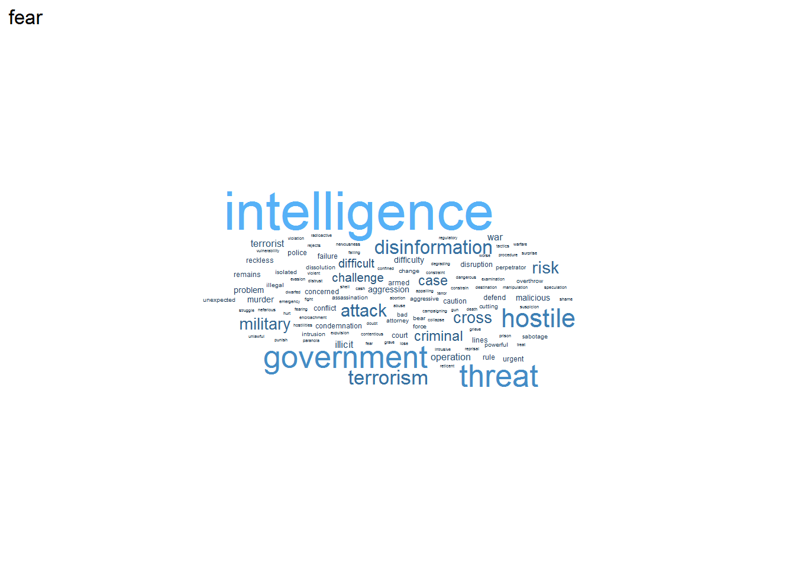
##
## [[2]]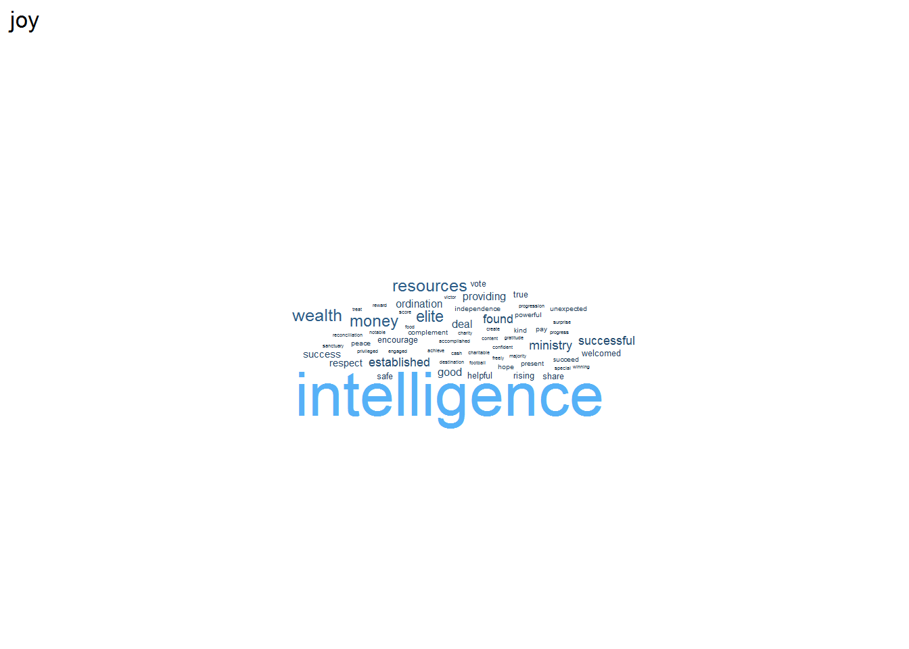
##
## [[3]]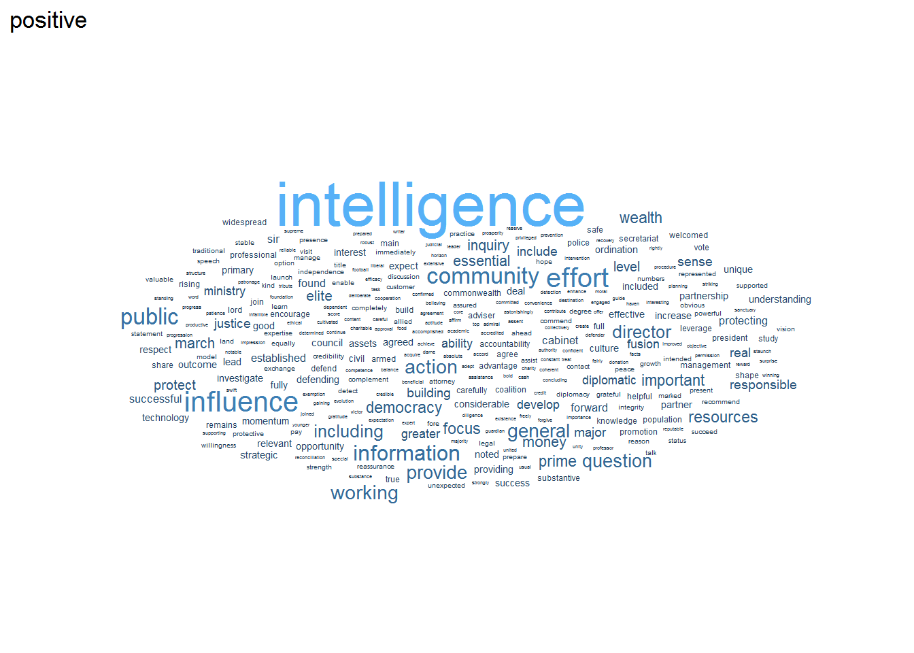
##
## [[4]]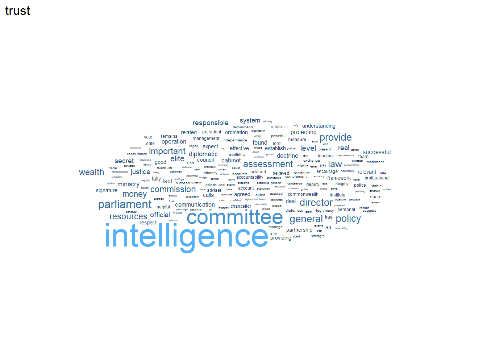
##
## [[5]]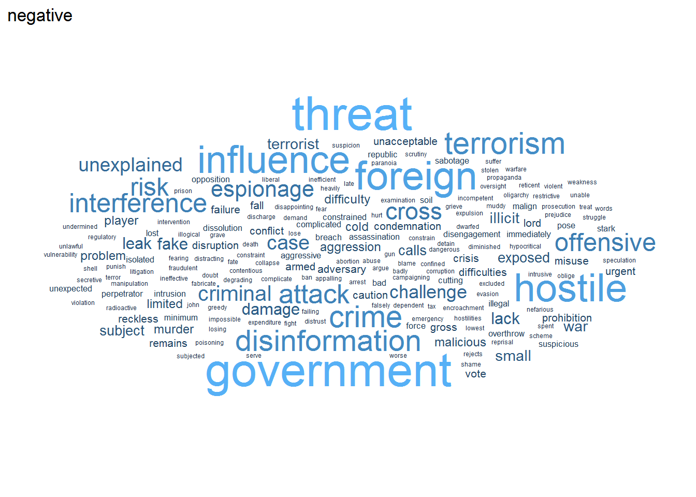
##
## [[6]]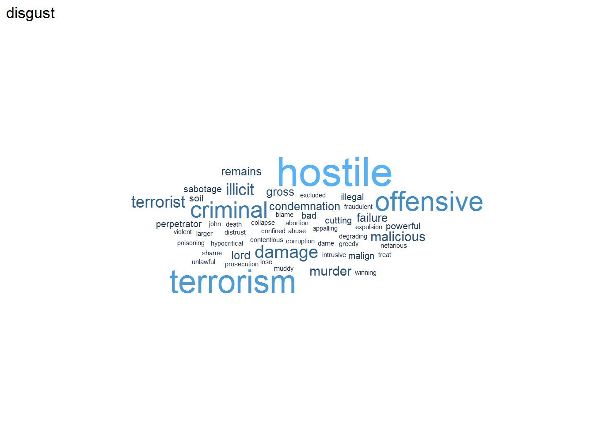
##
## [[7]]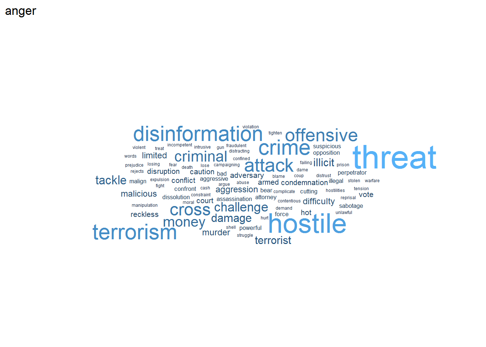
##
## [[8]]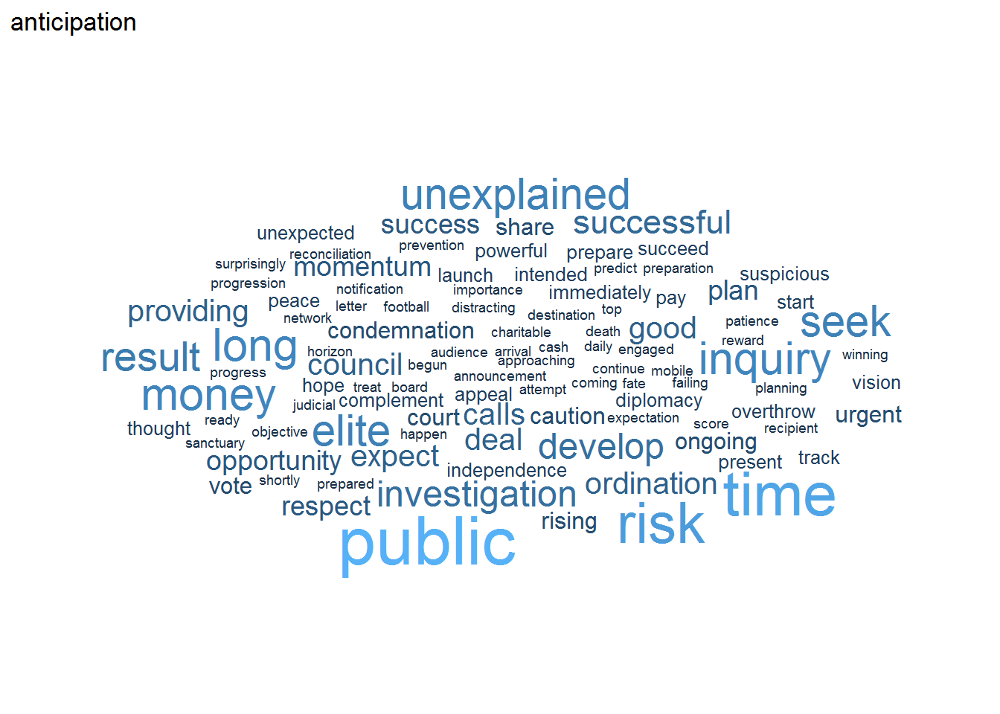
##
## [[9]]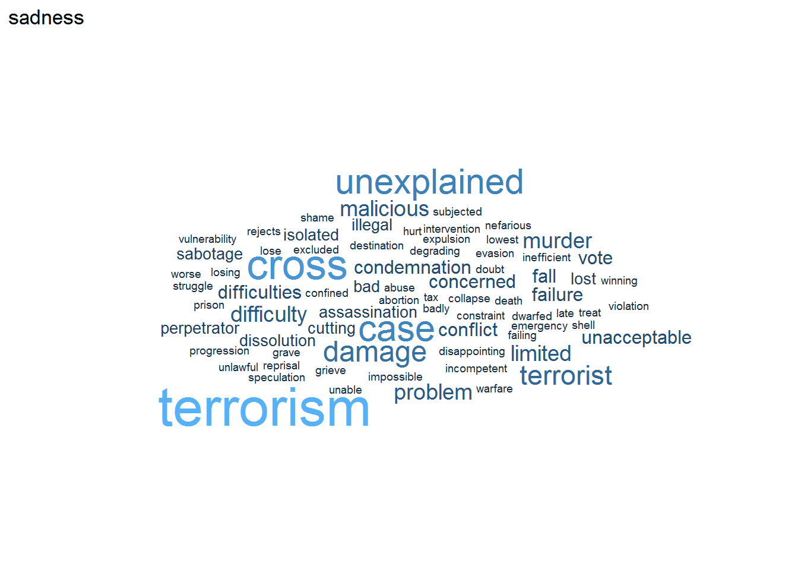
##
## [[10]]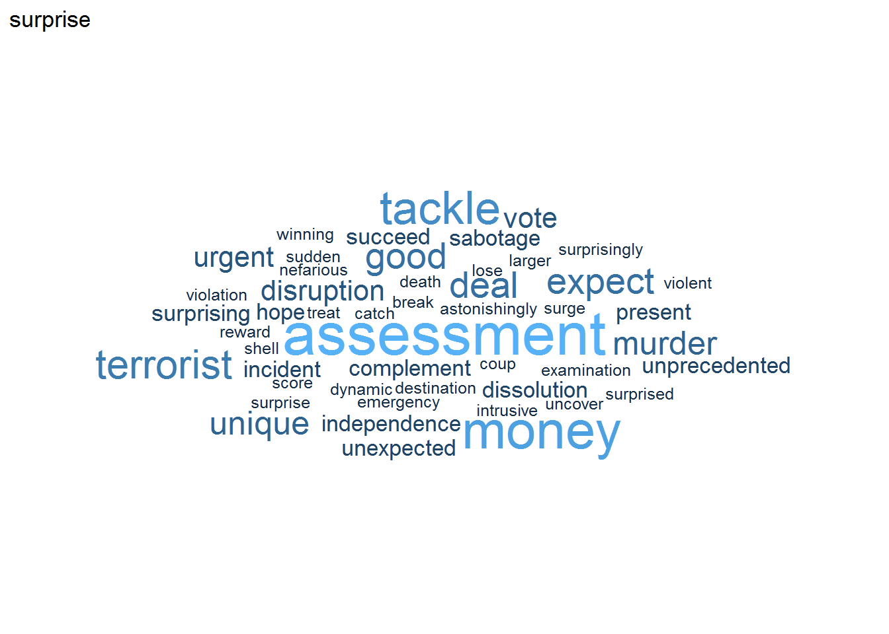
sentiment_counts <- rr_sentiment %>%
group_by(sentence_i, sentiment) %>%
summarise(n = n()) %>%
mutate(b = as.numeric(n > 0)) %>%
pivot_wider(names_from = sentiment,
values_from = c(n, b),
values_fill = 0)## `summarise()` regrouping output by 'sentence_i' (override with `.groups` argument)sentiment_counts <- rr_sentences %>%
mutate(sentence_i = 1:nrow(rr_sentences)) %>%
left_join(sentiment_counts, by = "sentence_i")
sentiment_counts ## # A tibble: 902 x 31
## page sentence redacted mentioned_MI5 mentioned_MI6 mentioned_GCHQ
## <int> <chr> <dbl> <dbl> <dbl> <dbl>
## 1 1 Intelli~ 0 0 0 0
## 2 2 Intelli~ 0 0 0 0
## 3 3 © Intel~ 0 0 0 0
## 4 3 Where t~ 0 0 0 0
## 5 3 This pu~ 0 0 0 0
## 6 3 To view~ 0 0 0 0
## 7 4 THE INT~ 0 0 0 0
## 8 4 Dr Juli~ 0 0 0 0
## 9 4 Chris G~ 0 0 0 0
## 10 4 Kevan J~ 0 0 0 0
## # ... with 892 more rows, and 25 more variables: mentioned_intel_agency <dbl>,
## # mentioned_services <chr>, sentence_i <int>, n_fear <int>, n_joy <int>,
## # n_positive <int>, n_trust <int>, n_NA <int>, n_negative <int>,
## # n_disgust <int>, n_anger <int>, n_anticipation <int>, n_sadness <int>,
## # n_surprise <int>, b_fear <dbl>, b_joy <dbl>, b_positive <dbl>,
## # b_trust <dbl>, b_NA <dbl>, b_negative <dbl>, b_disgust <dbl>,
## # b_anger <dbl>, b_anticipation <dbl>, b_sadness <dbl>, b_surprise <dbl>Now word cloud comparing words in sentences which do versus don’t contain redactions.
rr_sentiment %>%
anti_join(stop_words) %>%
mutate(redacted = recode(redacted,
`0` = "No redactions",
`1` = "One or more redactions")) %>%
group_by(redacted, word) %>%
summarise(n = n()) %>%
mutate(prop = n/sum(n)) %>%
filter(prop > .002) %>%
ggplot(aes(label = word, size = log1p(prop), color = redacted)) +
scale_size_area(max_size = 13) +
geom_text_wordcloud() +
theme_minimal() +
facet_grid(cols = vars(redacted))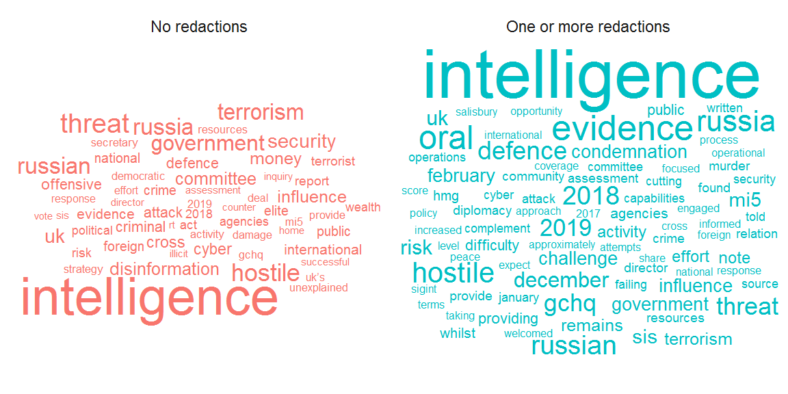